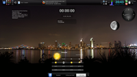

Kubuntu
Archivierte Anleitung
Dieser Artikel wurde archiviert, da er - oder Teile daraus - nur noch unter einer älteren Ubuntu-Version nutzbar ist. Diese Anleitung wird vom Wiki-Team weder auf Richtigkeit überprüft noch anderweitig gepflegt. Zusätzlich wurde der Artikel für weitere Änderungen gesperrt.
 Sammlung von Screenshots - Kubuntu
Sammlung von Screenshots - Kubuntu
Weitere Bildergalerien: Ubuntu, Xubuntu, Lubuntu und *buntu
| Kubuntu | ||||
| Screenshot | Informationen | |||
| Version: | Precise Pangolin 12.04 LTS | |||
| Thema: | - | |||
| Icons: | Oxygen | |||
| Wallpaper: | "+Kubuntu" | |||
| Anwendungen: | Desktop: Contour als Desktoplayout, Ordneransicht, Eieruhr Im Panel: Kmenü (kickoff), Digitale Uhr, Symbol-Fensterleiste (Icon-Tasks), Tabelle zur Zeichenauswahl, Pastebin,Systemabschnitt der Kontrolleiste | |||
| Anleitung: | - | |||
| Version: | Precise Pangolin 12.04 LTS | |||
| Thema: | Arbeitsfläche: Air-Notebook / Anwendungen: Plastik | |||
| Icons: | Oxygen | |||
| Wallpaper: | 47792-lakeside1 (Arbeitsfläche:  -> "NeuesBild hinzufügen" -> "Herunterladen") -> "NeuesBild hinzufügen" -> "Herunterladen") | |||
| Anwendungen: | KNemo, ein kleiner Netzwerkmonitor ist wieder an Bord | |||
| Anleitung: | Das Aussehen der Kontrollleiste wurde durch Hinzufügen/Entfernen von Miniprogrammen angepasst. | |||
|  | Version: | Natty Narwhal 11.04 | ||
| Thema: | Oxygen | |||
| Icons: | Oxygen | |||
| Wallpaper: | Shanghai @ night | |||
| Anwendungen: | Arbeitsfläche als Aktivität erstellt "Info-Desk", Log Viewer, Eieruhr, Uptime Display, Yet another Netspeed Monitor, Wetterbericht, Digitale Uhr, Luna. (von links nach rechts) | |||
| Anleitung: | - | |||
| Version: | Maverick Meerkat 10.10 | |||
| Thema: | QtCurve | |||
| Icons: | Oxygen | |||
| Wallpaper: | Plasma Globus | |||
| Anwendungen: | Lancelot als Menü | |||
| Anleitung: | - | |||
| Version: | Maverick Meerkat 10.10 | |||
| Thema: | Oxygen | |||
| Icons: | Oxygen | |||
| Wallpaper: | - | |||
| Anwendung: | rekonq | |||
| Anleitung: | - | |||
| Version: | Jaunty Jackalope 9.04 | |||
| Thema: | Aya | |||
| Icons: | Oxygen | |||
| Wallpaper: | New Wave | |||
| Anwendungen: | Plasma, Opera | |||
| Anleitung: | - | |||
| Version: | Hardy Heron 8.04 | |||
| Thema: | Standard | |||
| Icons: | Standard | |||
| Wallpaper: | - | |||
| Anwendungen: | SuperKaramba (Mondphase und Wetter) | |||
| Anleitung: | - | |||
| Version: | Hardy Heron 8.04 | |||
| Thema: | Oxygen for KDE3 | |||
| Icons: | Oxygen | |||
| Wallpaper: | Oxygen by Vladimir | |||
| Anwendungen: | Keine | |||
| Anleitung: | - | |||
 | Version: | Gutsy Gibbon 7.10 | ||
| Thema: | Polyester | |||
| Icons: | Intrigue Icon Set | |||
| Wallpaper: | flower wallpaper by sourcow | |||
| Anwendungen: | Dolphin+Superkaramba | |||
| Anleitung: | Für die Anzeige des CD-Covers wird das Superkaramba-Theme "CdKase Amarok" verwendet. | |||
| Version: | Gutsy Gibbon 7.10 | |||
| Thema: | unbekannt | |||
| Icons: | Crystal | |||
| Wallpaper: | Animatrix | |||
| Anwendungen: | Yakuake, kbfx | |||
| Anleitung: | - | |||
| Version: | Gutsy Gibbon 7.10 | |||
| Thema: | unbekannt | |||
| Icons: | Crystal | |||
| Wallpaper: | Dreamland | |||
| Anwendungen: | Yakuake, Kooldock | |||
| Anleitung: | - | |||
| Version: | Gutsy Gibbon 7.10 | |||
| Thema: | Oxygen | |||
| Icons: | Oxygen | |||
| Wallpaper: | KDE4 default | |||
| Anwendungen: | KDE4, Plasma | |||
| Anleitung: | - | |||
| Version: | Breezy Badger 5.10 | |||
| Thema: | unbekannt | |||
| Icons: | unbekannt | |||
| Wallpaper: | unbekannt | |||
| Anwendungen: | Konqueror, Konsole | |||
| Anleitung: | - | |||
| << zurück |
- Erstellt mit Inyoka
-
 2004 – 2017 ubuntuusers.de • Einige Rechte vorbehalten
2004 – 2017 ubuntuusers.de • Einige Rechte vorbehalten
Lizenz • Kontakt • Datenschutz • Impressum • Serverstatus -
Serverhousing gespendet von